Ordem de Produção
Na tela de Ordem de Produção será possível identificar se a OP faz parte do processo de beneficiamento pelo campo Cliente encomendante no rodapé da OP e também pelos depósitos utilizados nas linhas dos componentes, que quando for beneficiamento de vendas haverá depósitos de terceiros nas linhas dos componentes (terceiro), os mesmos depósitos estarão vinculados ao cadastro de Parceiro de Negócio > Campo Benef. vendas nas Definições benef. Vendas vinculado na OP.
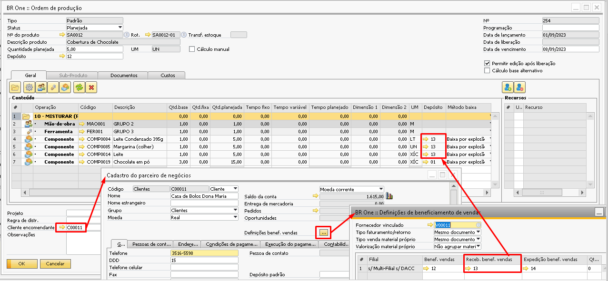{kind=link}
Nas configurações do beneficiamento de vendas quando o parâmetro Realizar cálculo dos insumos por está configurado como Realizado uma nova coluna estará disponível nas linhas da ordem de produção que é a coluna Faturado.
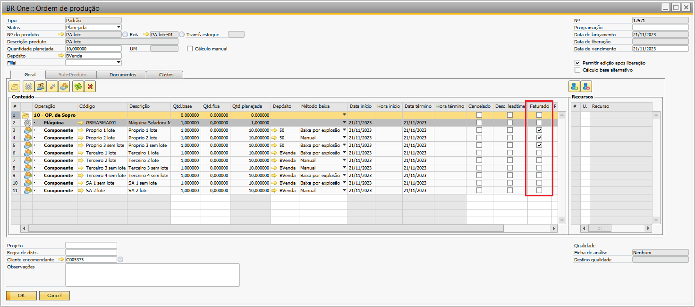{kind=link}
Como no parâmetro Realizado o sistema passa a olhar a estrutura que foi consumida dentro da OP e não mais o Roteiro, os componentes próprios que serão faturados do cliente na etapa 3 do assistente de faturamento e retorno precisam estar com o campo faturado marcadas, caso contrário estes componentes não serão exibidos na etapa 3 para faturamento.
Assim como no roteiro, este campo apenas poderá ser selecionado caso na linha do componente tenha um depósito próprio, caso seja um depósito de terceiro não será permitido a seleção.
Outra ação necessária de quando o beneficiamento de vendas está como Realizado é vincular o pedido de venda na ordem de produção do item pai conforme o exemplo abaixo:
Lembrando que o mesmo pedido pode ser vinculado em mais de uma OP. Como no exemplo acima temos um pedido de 20 e na OP a quantidade alocada é apenas 10, o restante ainda pode ser vinculado em outras OPs.
Os depósitos das linhas precisam seguir as regras abaixo:
Componente de terceiro: Depósito Benef. Vendas do PN vinculado a OP (depósito de terceiro)
Semi-acabado: Depósito Benef. Vendas do PN vinculado a OP (depósito de terceiro)
Componente próprio: Depósito próprio.
{kind=link}
Quando a opção de reserva de lote está selecionada, uma nova opção aparecerá nas ordens de produção, que é a opção Pedido de transferência de estoque.
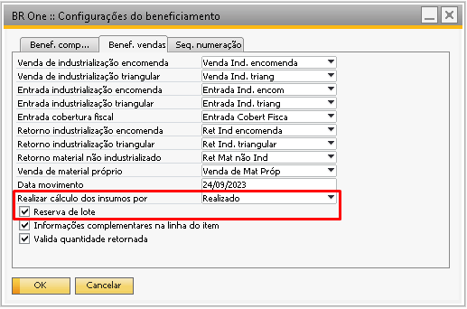{kind=link}
O pedido de transferência de estoques é obrigatório para todas as ordens de produção que são do beneficiamento de vendas, mesmo que a OP contenha apenas componentes que não sejam controlados por lote.
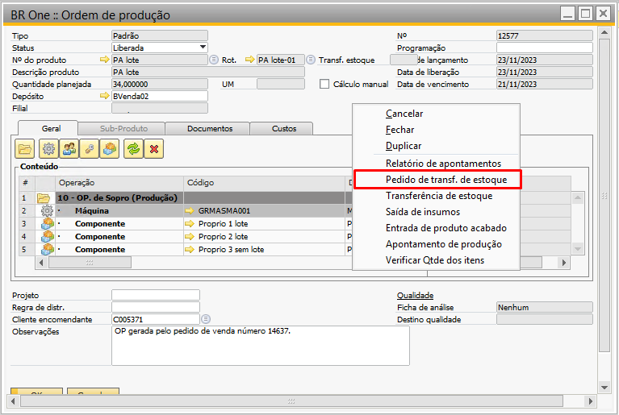{kind=link}
Quando a OP possui componentes controlados por lote, é necessário que esses lotes sejam definidos no pedido de transferência de estoque manualmente, caso contrário ao tentar realizar a saída de insumos o lote não será exibido para a seleção, neste caso é possível abrir o pedido de transferência já criado e apenas alocar os lotes necessários clicando com o botão direito do mouse no campo Quantidade e indo na opção Nºs de série/lote ou apertar Crtl + Tab.
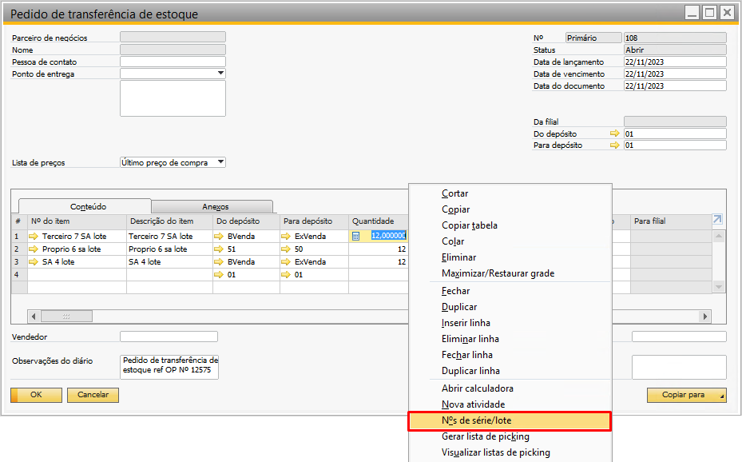{kind=link}
Também é possível criar pedidos de transferência de estoque parcialmente. Quando é o primeiro pedido de transferência de estoques, a tela trará a quantidade planejada para os componentes conforme o exemplo abaixo:
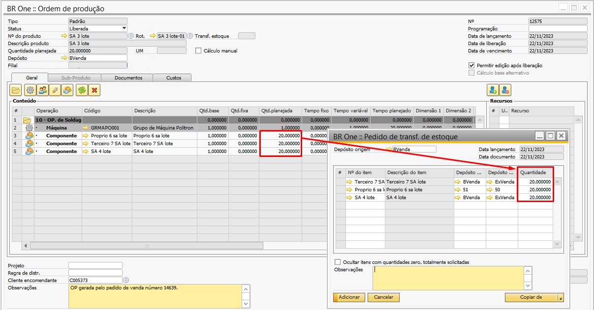{kind=link}
Esta quantidade pode ser alterada manualmente. No cenário acima as quantidades foram alteradas de 20 para 12 e o pedido de transferência de estoques foi adicionado. Ao abrir tela de pedido de transferência de estoques novamente a quantidade restante aparecerá.
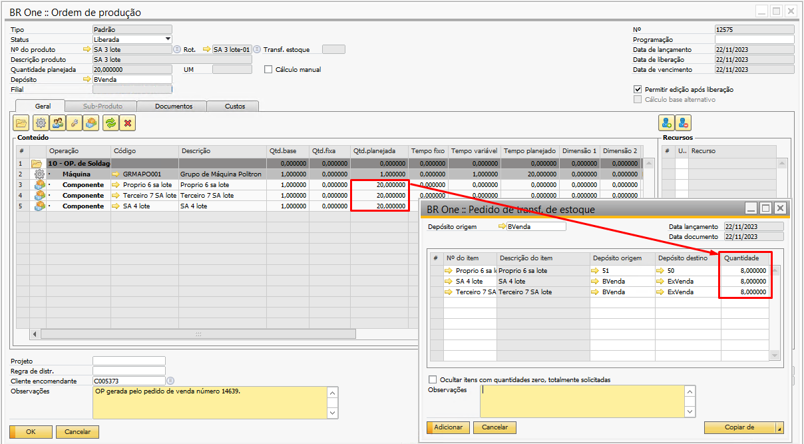{kind=link}
Todos os componentes aparecerão na tela de pedido de transferência de estoque. Os depósitos apresentados serão:
Componente próprio
Depósito origem: Estará vazio para preenchimento manual
Depósito destino: Depósito da linha do componente na OP
Componente de terceiro
Depósito origem: Depósito da linha do componente na OP
Depósito destino: Depósito de expedição vinculado ao PN
Semi-acabado
Depósito origem: Depósito da linha do componente na OP
Depósito destino: Depósito de expedição vinculado ao PN
Outra configuração importante de quando o beneficiamento está como realizado é o vínculo das OPs de semi-acabados com a OP pai. É necessário que todos os níveis da OP estejam vinculados conforme o exemplo abaixo, caso contrário a trava abaixo irá impedir a liberação da OP:
{kind=link}
BR One :: A Ordem de Produção nº XXX deve possuir vínculo com um pedido de venda, pois pertence ao processo de Beneficiamento de Vendas.
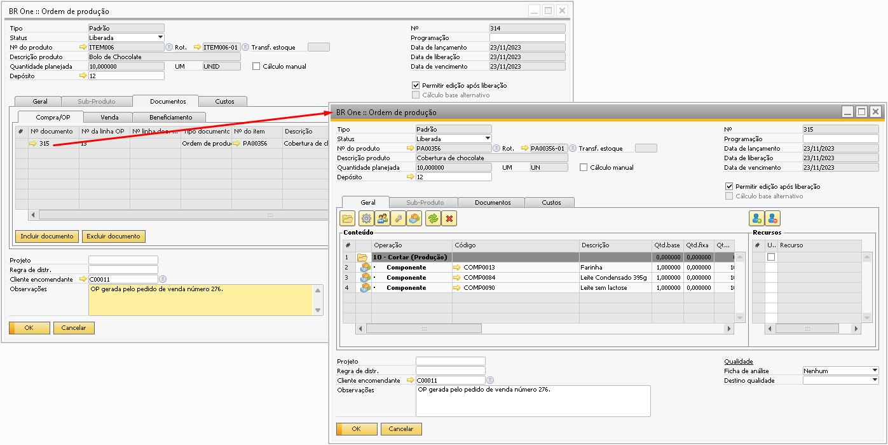{kind=link}
No exemplo acima, caso na OP 315 tivesse mais algum semi-acabado a OP dele deveria estar vinculada na aba Documentos > Compra/OP da OP 315.
Para realizar a saída de insumos, o processo a ser realizado vai depender configurações do beneficiamento, segue as opções abaixo:
Realizar cálculo dos insumos por: Previsto ou Realizado com a opção de Reserva de lote desmarcada:
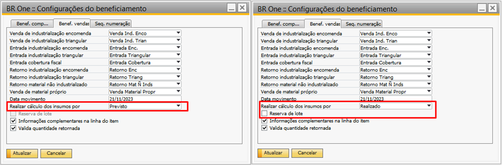{kind=link}
Componente de terceiro: Será feito uma transferência de estoques movendo o item do depósito da linha do item para o depósito de expedição do PN vinculado a OP.
Componente próprio: Será feito a saída de mercadoria utilizando o depósito da linha do item
Semi-acabado: Será feito a saída de mercadoria utilizando o depósito da linha do item.
Realizar cálculo dos insumos por: Realizado com a opção de Reserva de lote marcada
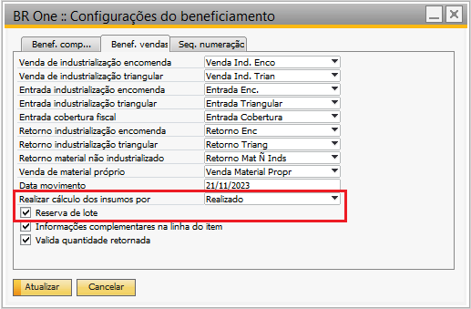{kind=link}
Componente de terceiro: Será feito uma transferência de estoques movendo o item do depósito da linha do item para o depósito de expedição do PN vinculado a OP.
Componente próprio: Será feito uma transferência de estoques movendo o item dos depósitos escolhidos no pedido de transferência de estoque Do depósito - Para depósito e depois fará a saída de mercadoria utilizando o depósito Para depósito.
Semi-acabado: Será feito uma transferência de estoques movendo o item do depósito da linha do item para o depósito de expedição do PN vinculado a OP e depois fará uma saída de mercadoria utilizando o depósito de expedição.
Notem que ao visualizar a tela de custo dos componentes temos o custo total de cada componente, mas os únicos que são levados para o custo atual do PA são custos do semi-acabado e do componente próprio, os custos de componentes de terceiros não serão agregados ao PA.
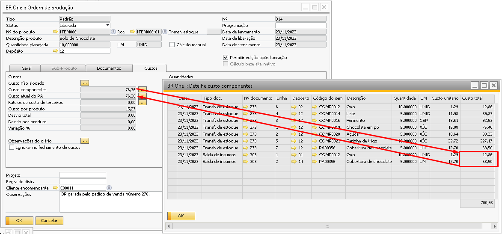{kind=link}
Quando na estrutura da OP existir apenas componentes de terceiros, ao realizar a entrada de PA será agregado 0,01 de custo por PA, então caso o usuário faça uma entrada de PA com quantidade 5 e os componentes sejam todos de terceiros o PA terá um custo de 0,05. Isso se faz necessário porque o sistema precisa ter um custo na entrada do documento.
Quando a opção de Reserva de lote está marcada e é realizado a transferência dos componentes com base no pedido de transferência de estoques, o vínculo entre a transferência e o pedido de transferência pode ser visto no Mapa de relações conforme abaixo:
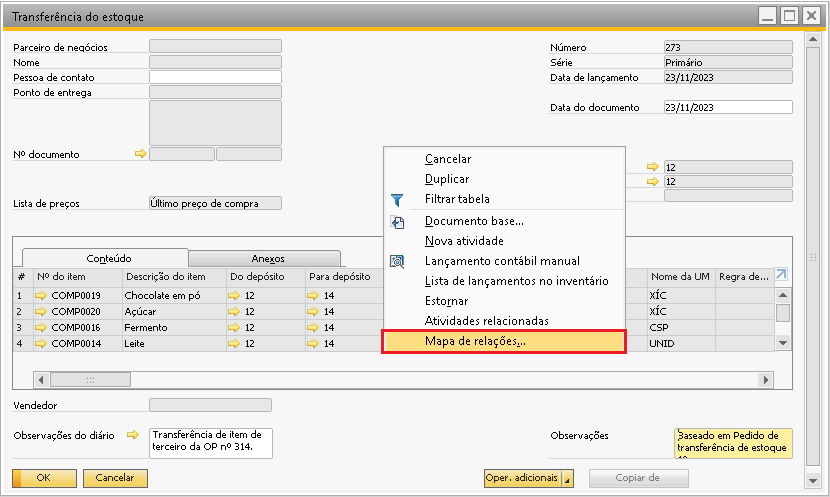 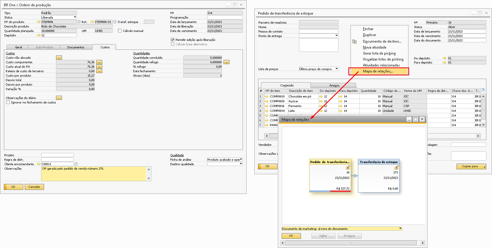{kind=link}
{kind=link}
Notem que o pedido de transferência está com metade da barra em azul e a outra metade vermelha, isso significa que a transferência de estoques que está vinculada ao pedido corresponde a metade do pedido de transferência, quando o usuário fizer a saída de insumos do restante dos componentes será criada uma nova transferência de estoques, ela também estará vinculada ao pedido de transferência, que será fechado e a barrinha do mesmo ficará toda azul, indicando que todos os itens do pedido já foram transferidos.
Outro ponto necessário ressaltar quanto ao pedido de transferência de estoques, é que caso haja estorno de saída de insumos/transferência de estoques este valor não retorna em aberto no pedido de transferência, havendo a necessidade de gerar um novo pedido de transferências de estoques com a quantidade estornada. Ex. O pedido de transferência de estoques foi criado, ao realizar a saída de insumos houve a transferência de 100% dos componentes, desta forma o pedido de transferência será fechado. Caso o usuário posteriormente estorne esta saída de insumos o pedido de transferência não será reaberto, havendo a necessidade de criar um novo pedido de transferência de estoques, senão ao tentar fazer a saída de insumos o usuário receberá a mensagem de que nenhum pedido de transferência de estoques foi encontrado.
Como a nota fiscal de entrada utilizou o depósito definido em Receb. Benef. Vendas é necessário que a OP também utilize este depósito nas linhas dois insumos pois é neste depósito que o componente se encontra.
Para os componentes de terceiros, ao realizar a entrada de PA não haverá a saída de insumos e sim uma transferência de estoque, onde irá transferir o componente do depósito de terceiro da linha da OP para o depósito Expedição benef. Vendas vinculado ao cadastro do cliente ecomendante.
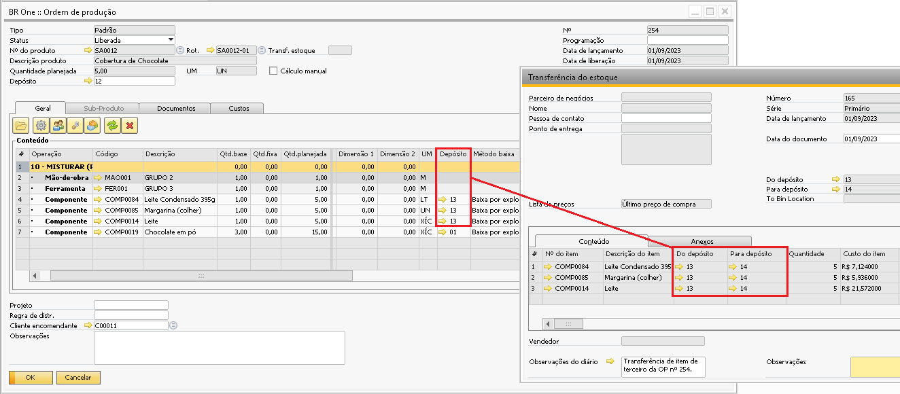 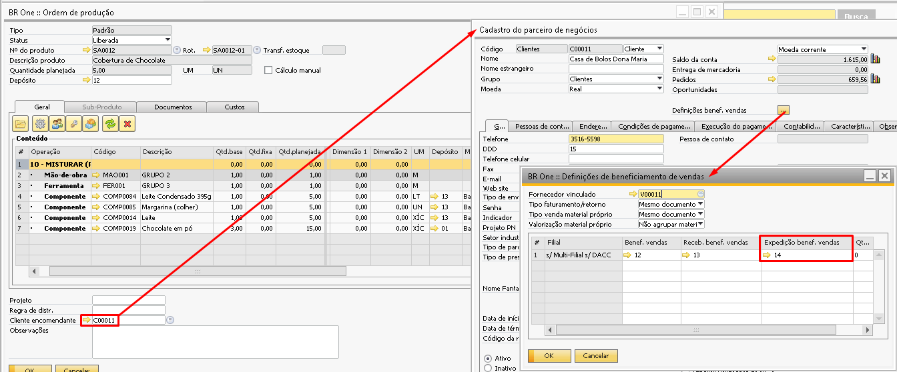{kind=link}
{kind=link}
Apenas para os componentes próprios vão precisar da saída de insumos. Os que forem baixa por explosão ocorrerão automaticamente na entrada de PA e os que forem baixa manual precisarão ter a baixa realizada pelo usuário.
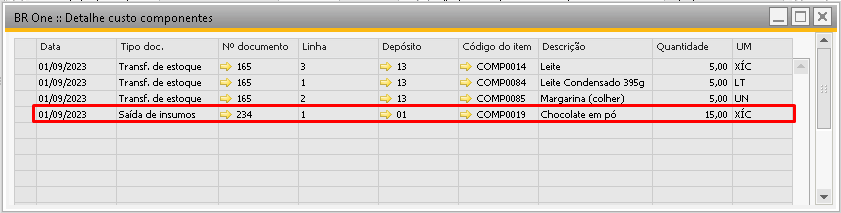{kind=link}